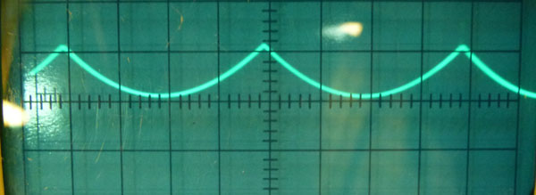

|
This module is a variation on the 1973 Classic Serge R6 Ring Modulator. From the catalog (abridged): The RING MODULATOR (MOD) is an AC or DC coupled Ring Modulator featuring superior audio processing capabilities. The Ring Modulator offers two VC inputs in addition to the two signal inputs which may be used to perform voltage controlled transitions between full ring modulation and amplitude modulation. A little on how it works:
Construction
Before you start assembly, check the board for etching faults. Look for any shorts between tracks, or open circuits due to over etching. Take this opportunity to sand the edges of the board if needed, removing any splinters or rough edges. When you are happy with the printed circuit board, construction can proceed as normal, starting with the resistors and diodes first, followed by the taller components. Take particular care with the orientation of the polarized components, such as electrolytics, diodes, ICs and transistors. If you are planning to use it with 6.3mm or 3.5mm jacks, the common of these jacks should be wired to 0V/GND as usual. Just solder the return wire to the (unused) center pins of the power connector. Transistor types are not critical. BC557 has been substituted for the original types used. 2N3906 can be used if installed backwards with respect to the outline on the overlay. A TL071 or similar can be used in place of the LM307. There are three sets of pads for 1206 100n capacitors on the rear of the PCB. The one near the LM31700 is only needed if that chip is used. The other two are optional. If you are unable to purchase CA3080 or LM3080 variants, there is provision on the PCB for a LM13700/LM13600 variant to be used in its place. The 1k resistor next to this chip is only required if this type of chip is used, otherwise leave both the chip location and resistor location empty. Do not install chips in both the LM3080 and LM13600 locations. See the following note if you are using a LM13700/LM13600: Ver 1.0 corrections
Notes for the Ring Modulator. As this is a dual purpose PCB, there are some variations between the build types. The Ring Modulator specific components and values start with "R". Do not use any value staring with "G". The PCB stuffing diagram above has been modified to show all the parts required on the Ring Modulator. Install all parts as shown.
Set UpSuggested setup procedure: Preliminary adjustments -
 Note that the rectified sawtooth wave has a distinctly rounded bottom.
It would be good to repeat the initial adjustment of TR1 as above, mow that TR3 has been set.
Finally, with the sawtooth still connected to Input X, connect it to Input Y.
Alternative method: Set X-XY pot to X (CCW). Connect an audio frequency triangle wave to X input. Adjust trimmers TR2 and TR3 for minimum breakthrough. This will require alternately adjusting the two trimmers until you get the desired result. Move the audio frequency triangle wave to the Y input. Connect a second triangle wave, this time at around 1Hz, to the X input. Adjust TR1 for a balanced "throb".
For those interested, original Serge kit assembly and set-up instructions can be found here:
Info on the original Serge module can be found here:
Notes:
Parts list This is a guide only. Parts needed will vary with individual constructor's needs. If anyone is interested in buying these boards, please check the PCBs for Sale page to see if I have any in stock. Can't find the parts? See the parts FAQ to see if I've already answered the question. Also see the CGS Synth discussion group.
Article, art & design copyright 2013 by Ken Stone
| ||||||||||||||||||||||||||||||||||||||||||||||||||||||||||||||||||